The assessment started with a full TCP and UDP port scan to identify exposed services on the target machine.
nmap -sVC -p- --open -sS --min-rate 5000 -v -n --stats-every=5s -Pn -oN underpass_scan 10.10.11.48The TCP scan revealed SSH running on port 22 and an Apache HTTP service on port 80.
The UDP scan identified an SNMP service listening on port 161.
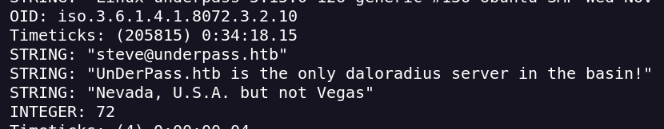
Given the presence of SNMP with the public community string, further enumeration was performed using snmpwalk.
snmpwalk -v2c -c public 10.10.11.48The SNMP output disclosed information indicating that the host was running a daloradius service.
Web enumeration was then focused on the discovered application.
gobuster --wordlist=/usr/share/wordlists/dirbuster/directory-list-2.3-medium.txt dir -u http://underpass.htb/daloradius/The enumeration revealed the daloradius web interface, including the operator login panel.
http://underpass.htb/daloradius/app/operators/login.php
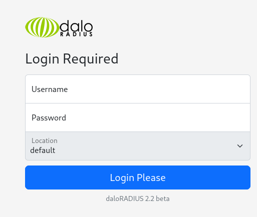
The application was found to be vulnerable to default credentials.
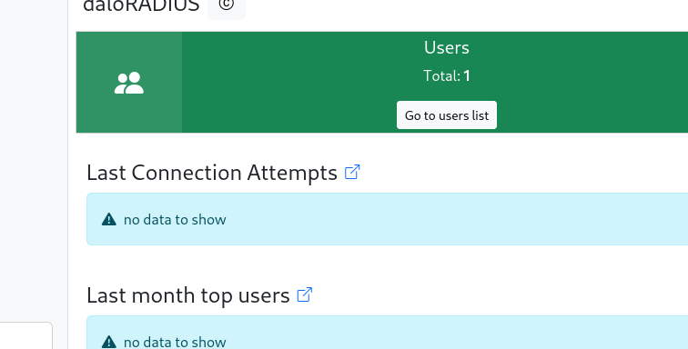
After authenticating, an MD5 hash was discovered within the application.
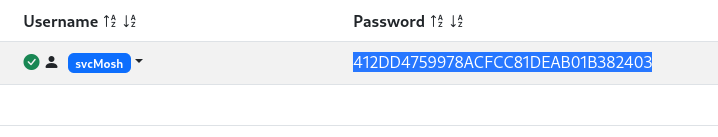
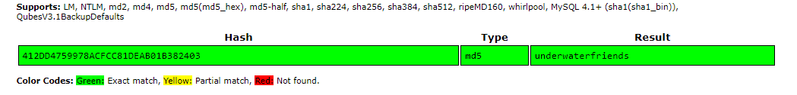
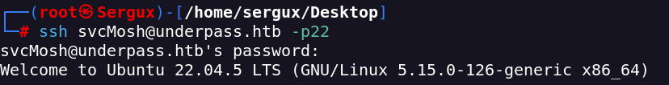
Using the recovered credentials, access was obtained as a standard user within the daloradius application.
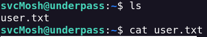
While exploring the available functionality, a command was identified that could be executed with administrative privileges.
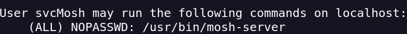
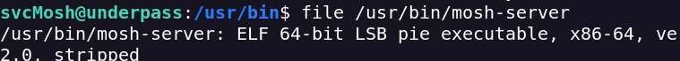
The application allowed execution of a binary with debugging enabled.
The program was started with the debugger activated, enabling further interaction at a privileged level.
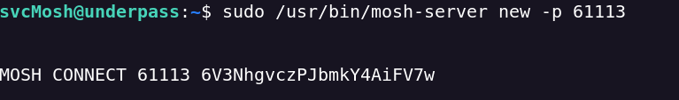
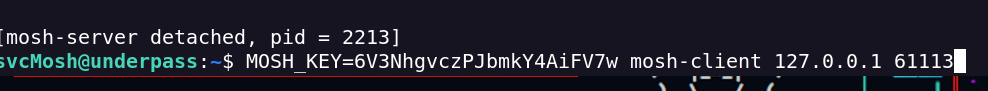
By leveraging the debugging capabilities of the executed program, command execution was achieved with root privileges.
This resulted in a fully privileged root shell.
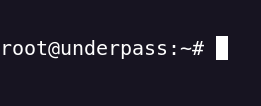